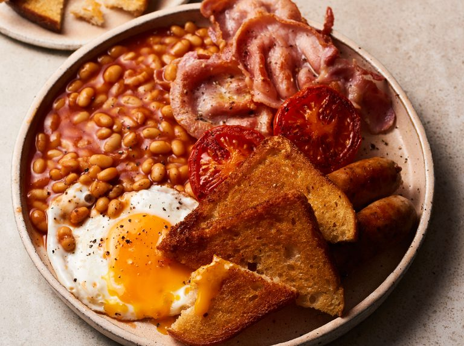

Fried Bread

Description
Homemade fried bread is the perfect accompaniment to eggs or a full English fry-up.
It's super-simple to make and needs just two ingredients.
Ingredients
- 2 tbsp neutral-tasting oil (grapeseed or sunflower work well), or 40g lard
- 2 slices thick white bread
Steps
- Heat half the oil or lard in a frying pan over a medium-high heat. Once hot, fry
the bread for 1 min 30 seconds until golden, then add the remaining oil or lard,
turn the bread over and cook for another 1 min 30 seconds, until golden on both sides.